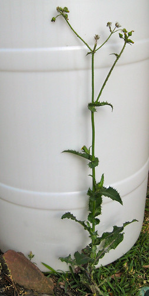
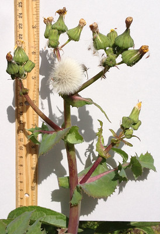
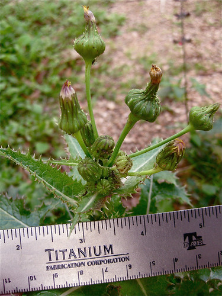

Thistle - Sow
Scientific name: Sonchus oleraceus
Abundance: plentiful
What: leaves, stems, roots
How: Young leaves in salads, steamed or boiled; stems can be peeled then steamed like asparagus; roots are very bitter and generally considered to be edible in dire circumstances after roasting or boiling; coffee can be made from roasted roots.
Where: yards, fields, disturbed areas, sunny
When: Early spring through fall
Nutritional Value: Rich in vitamins A,Bs,C and some minerals
Dangers: Don't mistake poisonous Common Groundsel (Senecio vulgaris) or Texas Groundsel (Senecio ampullaceus) for Sow Thistle.
Medicinal Summary:
Leaves - antidepressant; antioxidant; antimicrobial; soothes urinary tract inflammations including from kidney stones; sedative; fever reducer; anti-inflammatory; pain reliever (tisane)
Sow thistle.

Closeup of leaves wrapped around stem.

Young sow thistle plant.

Slightly older sow thistle.

Sow thistle flowers.

Sow thistle flowers (never opened, opened, and gone to seed).

Young sow thistle flower buds. Pickle the ones that haven't opened by soaking them in leftover pickle juice for at least six weeks in the refrigerator. Buds that are still flat or slightly dipped inwards are the ones you want such as those directly above the ruler. Buds that come to a point have already opened and aren't worth eating.

This weed can be found everywhere and is very rich in vitamins and other nutrients. The plant body looks a lot like bull thistle but sow thistle has a number of small, yellow flowers rather than one bulbous purple or tan flower. Also unlike bull thistle stem fibers, sow thistle fibers make poor cordage.
My favorite way to eat sow thistle is to pick and steam the young plants before they've produced any flower buds. The steamed stalk/leaves go great with steamed carrots.
Another great treat is pickled sow thistle buds. Simply pick flower buds before they have ever opened and drop them in leftover pickle juice. Let them soak for six weeks and they become a wonderful nibble, very similar to pickled capers.
{kind=link}
To make coffee from sow thistle roots roast the roots in a 400F oven until they turn dark brown. The dark brown the darker the resultant coffee. Grind the browned roots in a coffee grinder and then use the results as you would regular coffee grounds to make a caffeine-free coffee.
Don't mistake poisonous Common Groundsel (Senecio vulgaris) for Sow Thistle. Both their flowers look very similar but Groundsel leaves are blunt and fuzzy whereas Sow Thistle leaves are spiky and hairless. Also, a closer look at the flowers reveals black tips at the ends of the calyx (the collar around the base of the flowers).
Common Groundsel (poisonous).

Close-up of Common Groundsel flowers (poisonous). Note the black triangles at the bases of the flowers.

Texas Groundsel (Senecio ampullaceus) also has flower buds shaped like Sow Thistle but it's buds are yellow and its ray petals are fewer in number but wider than Sow Thistle's.

Texas Groundsel leaves wrap around the stem in the same manner as Sow Thistle but its leaves are fuzzy and covered in fine threads, seeming like spider webs.